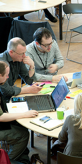
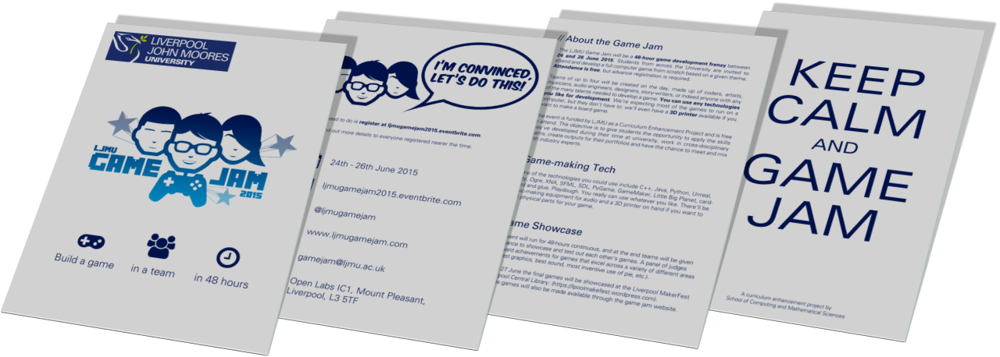

A Stanley Parable
David Llewellyn-Jones
Curriculum Enhancement Project Network Lunch
15 April 2015

What is it?
Game development: Coding, design, graphics, audio, music, etc.
Continuous 48 hours, 24-26 June at OpenLabs
Awards at the end, but not competitive
Modelled on Global Game Jam
http://globalgamejam.org
Arranged so far
Venue, technical support
PhD students to cover event
Industry representatives, Liverpool SU support
Website, social media, leaflets, advertising

Student interest
Some students very enthusiastic
Enough students signed up to run
Mostly students from computing
Some students expressed lack of confidence
Timing could be improved
Application outside computing
Assessing the benefits
- Will student's confidence increase?
- Will it be a learning experience
Similar events outside computing
- Hack events related to Makerspace CEP
- Competitive events
- 'Hackathons' becoming widespread